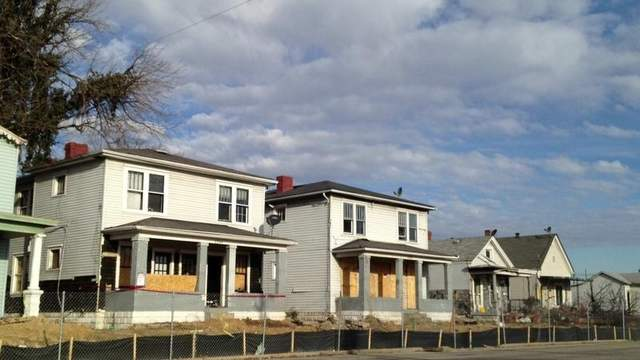
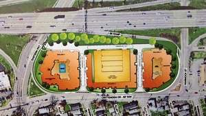

502.637.3159

Boarded-up houses along Crittenden Drive are being demolished for an
apartment project by a private developer for use by University of
Louisville students. / Martha Elson/The Courier-Journal
By Martha Elson
The Courier-Journal
Workers are demolishing More than a dozen boarded-up houses and other structures on a nearly 5-acre site at Crittenden Drive at Eastern Parkway, where a private developer plans to build apartments for University of Louisville students.
Called The Lofts, the complex will have 272 apartments in two, five-story buildings on either side of a multi-story parking garage. The project will have 632 parking spaces, nearly all of which will be in the garage, said Kevin Young, head of Land Design & Development firm, which worked on plans for the project.
MORE | Builder seeks Germantown rezoning to rehab industrial site
The apartments are expected to be ready for the 2015-2016 school year, he said. The development site is just east of U of L and bordered by Eastern Parkway, Crittenden Drive, Warnock Street and Interstate 65. It is at the western edge of the St. Joseph neighborhood, which has bungalows and other housing stock dating to about 1910. The scope of the project was scaled back somewhat after neighbors expressed concerns. The former Tabernacle of David church, a modest, white structure, was being demolished recently at the northern end of the site. The site also includes several garages and a 16-unit apartment building that are being razed.
The city's historic preservation staff had said demolishing the homes would have an adverse impact on the historic resources of the area and "erode the historic
residential pattern," in comments in the public file at Metro Planning & Design Services.
The staff did not support the plan and suggested an alternative site design that would encourage reuse of the "existing historic buildings." Gail Linville,
president of the St. Joseph Area Association, had expressed concerns early in the planning review process about the density of the development and the amount of traffic it
would generate. A neighborhood meeting about the project was held in May 2012 at Tabernacle church.
But the properties on the site had been deteriorating, and she said the new development will be good for the area. Even though the project is not being undertaken by U of L, it's geared to serve the university, and "U of L's just moving on, working its way here," she said.
A 2012 traffic study in connection with the project done by the Jacobs firm in Goshen for Metro Public Works found that the traffic impact would be "manageable" to the "existing highway network." While delays would increase, the system "will continue to operate at an acceptable level of service," the study found. It did not recommend any improvements. "This particular area has deteriorated a lot," Mary Rose Evans, mayor of nearby Parkway Village said at the site last week, where she came with Linville to talk to the project manager, Mark Anderson. "This is going to be an improvement."
"Any time you have something that brings a lot of new people into the neighborhood, neighborhood businesses are going to get more business," she said. A few businesses are located next to the housing site, and more operate along nearby Preston Street. Anderson said at the site last week that he could not comment on the project. Blake Johnson, president of the Buck Co., said in an email Tuesday that he was checking with the project team about whether he could speak publicly about it. Duncan Commercial Real Estate on Frankfort Avenue had announced late last year that HRB Louisville corporation had paid $4.56 million for the site, backed by the Royal/Buck Co., affiliated with the John Buck Co. in Chicago. HRB has a Kentucky address in Frankfort and the same address as the Buck Co. in Chicago, according to Kentucky Secretary of State information. A zoning change to allow a higher residential density was approved by the Louisville Metro Council in December 2012. Height variances also were approved to allow the residence buildings to be 58 feet tall and the garage to be 73 feet tall. Original plans in the public file at Metro Planning and Design Services, which involved an Austin, Texas, developer called Innovative Student Housing, showed 835 spaces in the garage before that number was reduced. A justification statement for the height variances in the public
file said the buildings would serve as a buffer and screen between I-65 and residential properties to the east of Crittenden.
Mark Hebert, a U of L spokesman, said in December that U of L is not involved in the project, although it has said it is willing
to discuss an affiliation agreement to provide educational and program support to the student residents.
Reporter Martha Elson can be reached at (502) 582-7061.
called Innovative Student Housing, showed 835 spaces in the garage before that number was reduced. A justification statement for the height variances in the public
file said the buildings would serve as a buffer and screen between I-65 and residential properties to the east of Crittenden.
Mark Hebert, a U of L spokesman, said in December that U of L is not involved in the project, although it has said it is willing
to discuss an affiliation agreement to provide educational and program support to the student residents.
Reporter Martha Elson can be reached at (502) 582-7061.
Debris from a demolished building is deposited in a dumpster at a
site where new student housing is planned by a private developer on
Crittenden Drive near University of Louisville. / Martha Elson/The
Courier-Journal

A rendering shows a plan for two apartment buildings flanking a
parking garage along Crittenden Drive at Eastern Parkway. / Metro
Planning & Design Services public file